埼玉の山の中に謎のスポットがあるという友人からのタレコミを聞いて出かけてみた。
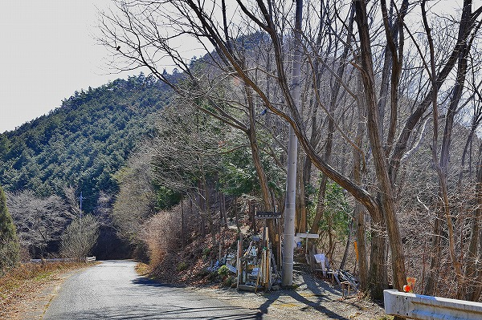
山中の車道沿いに何やらゴチャゴチャした感じの場所があるじゃあないですか！
うむ、ここだな。
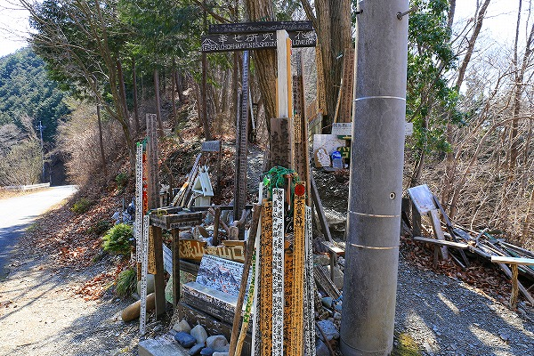
おおおっ！
凄い密度で色々なメッセージがこちらに襲い掛かってくる。
いいぞ、いいぞ！
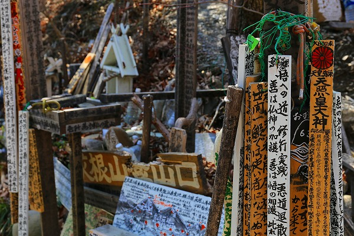
どうやらここは登山道の入り口のようだ。
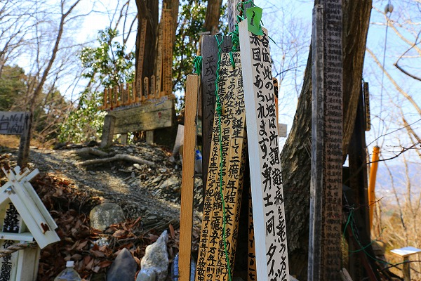
これから登山するぞ、というテンションの方々の
メンタルをグッと凹ませるには充分な量のメッセージである。
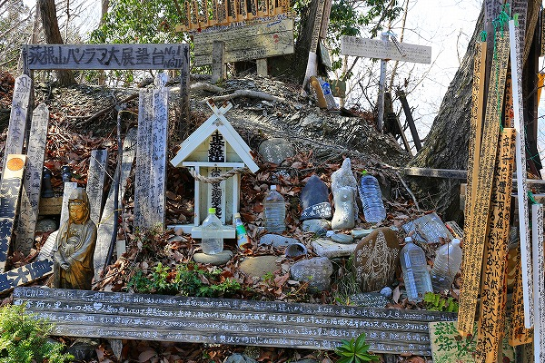
詳しい文章の内容は省くが、この密度と量からどんな事が書かれているかは推測してください。
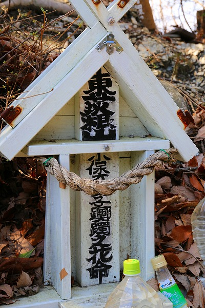
何ぞの細胞があるとかないとかで話題になっていた方が祀られてました。まだ生きてるのに…。
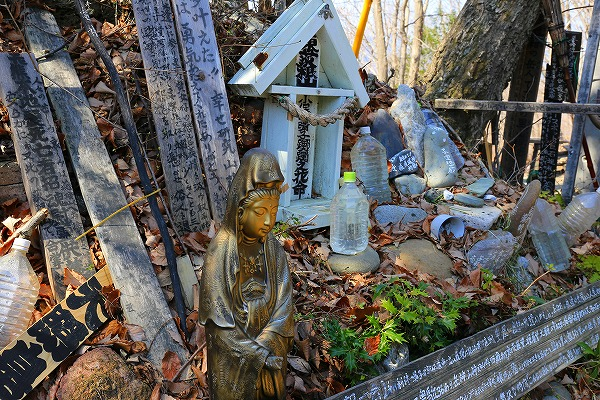
守備範囲としては神道から仏教、果てはスピリチュアル系まで幅広い。
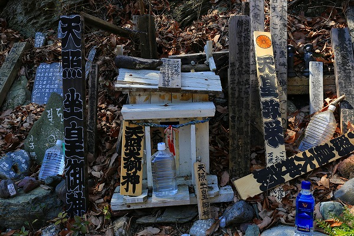
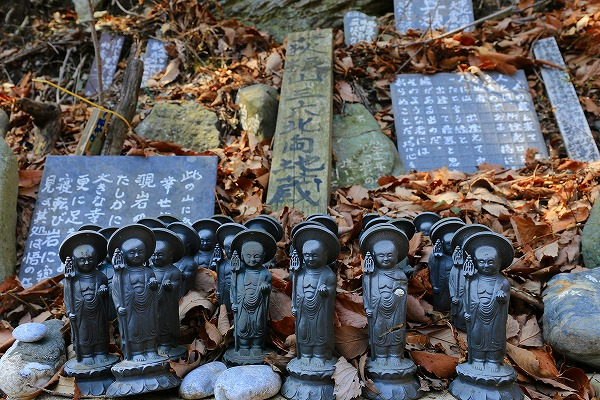
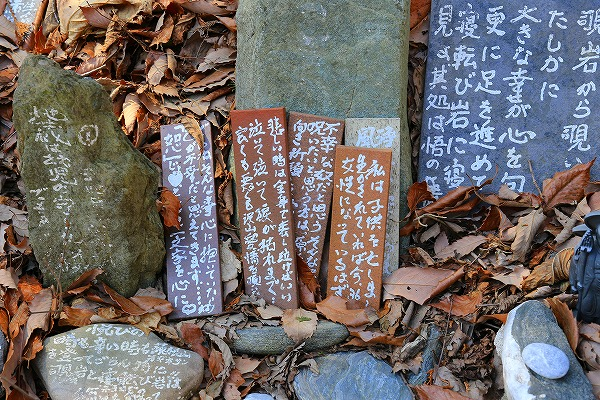
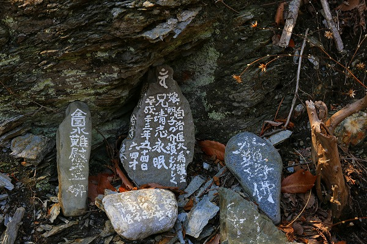
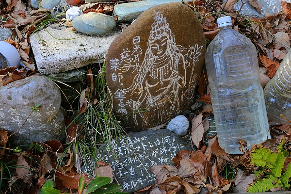
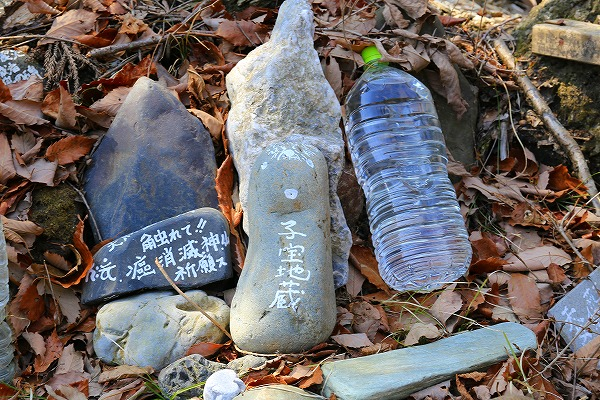
お腹一杯になりました？私は既に腹
バンバンビガロです。
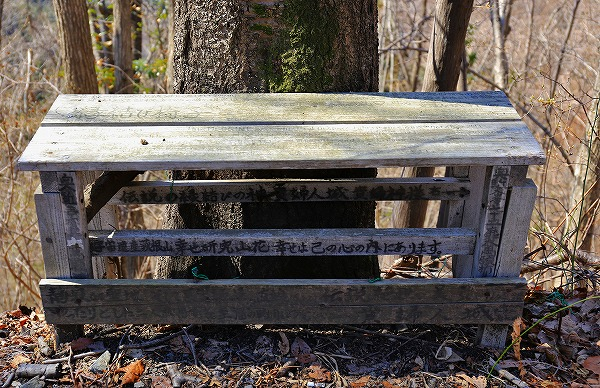
あまりの情報量に脳がオーバーフローしかかって少し休もうと傍らのベンチに掛けようと思ったら…
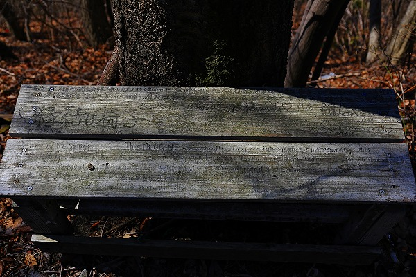
情報量多すぎて座れねー。
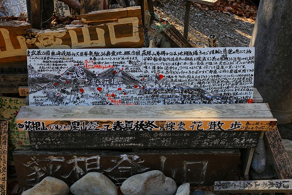
これだけのメッセージを書くということは、当たり前だがここに来る人々に何かを伝えたいんだよなあ。
お喋りすぎて何言ってるのかよく判らない人っているけど、その典型のような気もする。
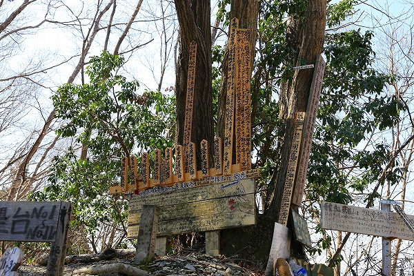
コトバの森を縫うように登山口がある。
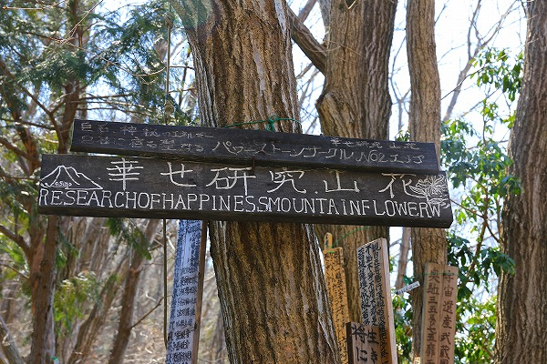
幸せ研究山花…
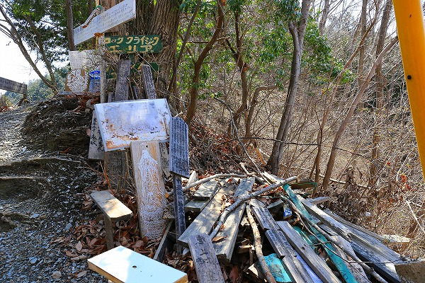
裏には無数のコトバの残骸が。
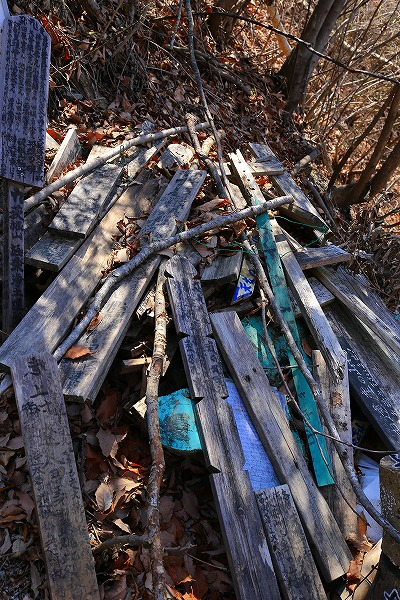
いわばコトバの墓場だな。
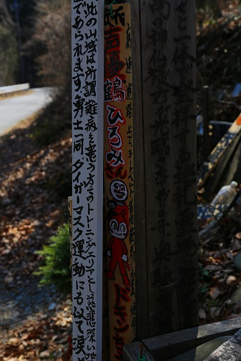
ドキンちゃんの声優さんが亡くなった供養塔。
ここのメッセージは常に
時事ネタを取り入れつつアップデートし続けているのだ。
恐らくテレビか何かを見ながら、思いついたままにコトバにしたためるのであろう。
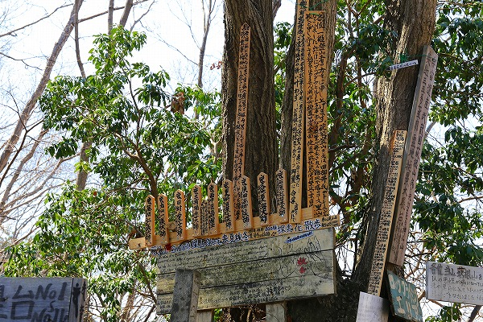
何故このメッセージを書いた作者はここに惹かれたのだろう。
単なる山岳信仰ではない、何か別のパワーをこの山に見出したのだろうか？
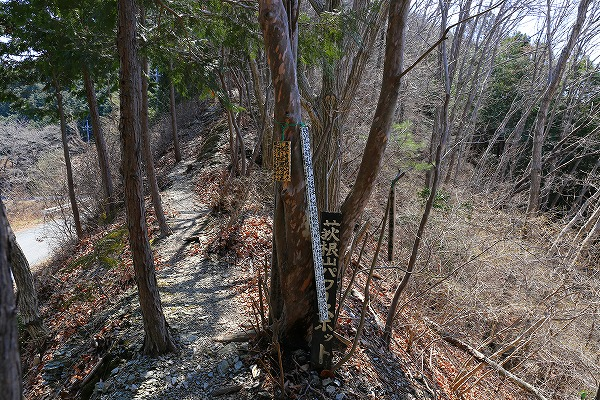
それを突き止めるべく登山開始！
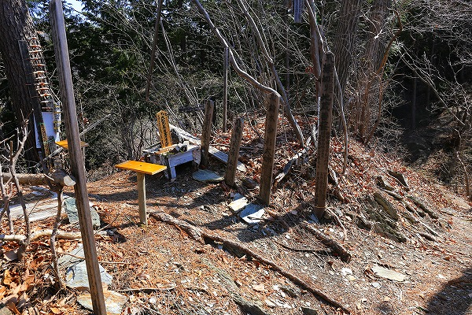
途中にもチョイチョイメッセージが点在しているので油断ならないのです。
とても登山に集中出来る環境ではないぞ！
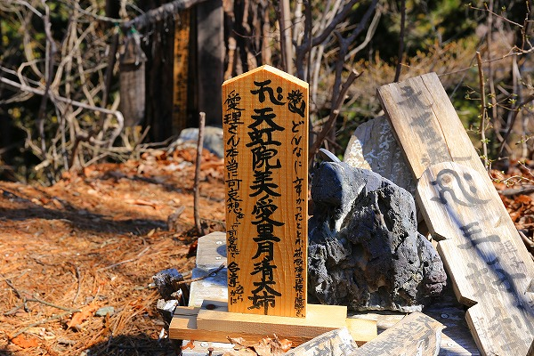
こちらもまた当時ニュースで話題になっていた監禁事件に関する位牌状の供養塔。
裏には思いの丈がびっしり書き込まれていたが生々しすぎるので割愛します。
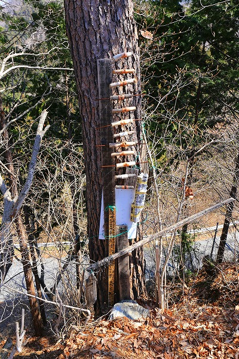
この謎の霊場を作り続けている人物像を勝手に想像してみる。
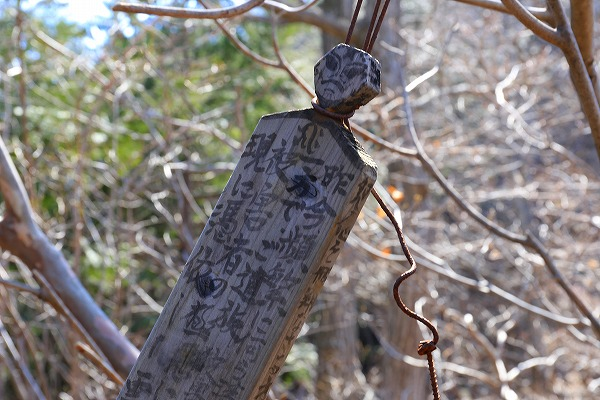
毎日毎日凄く忙しいんだろうなあ。
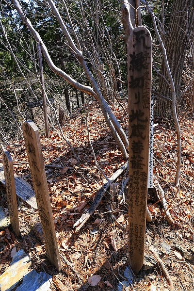
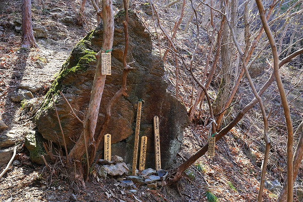
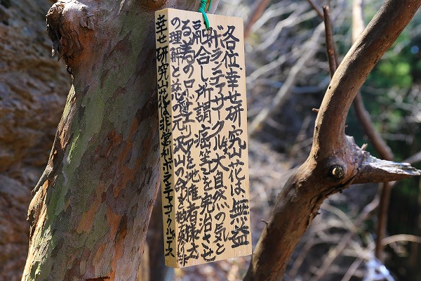
ボランティアサークルなんですね。
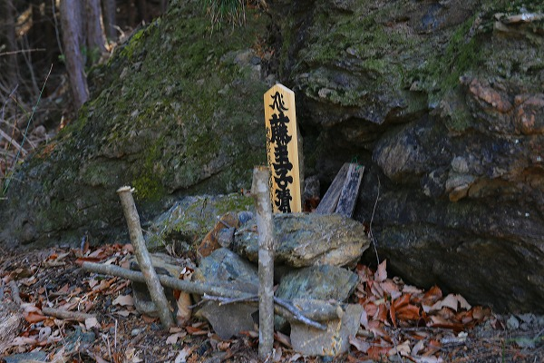
ああ、この方の自殺も話題になってましたね。好きだったんですけどねえ。合掌。
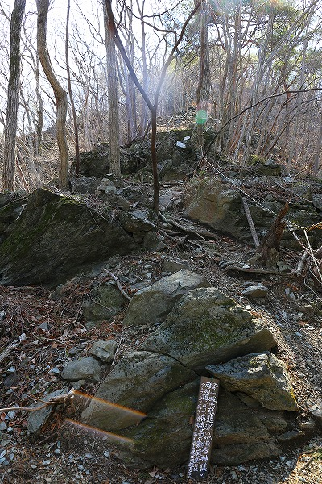
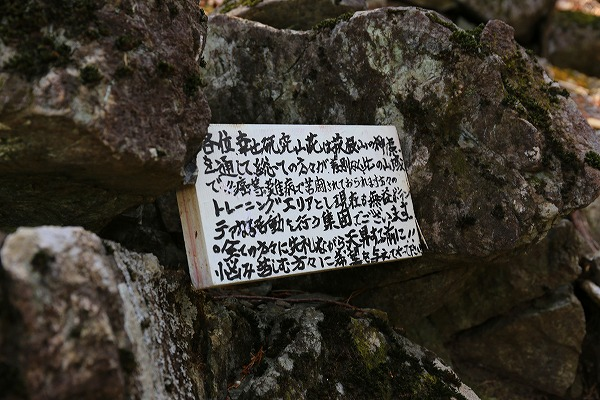
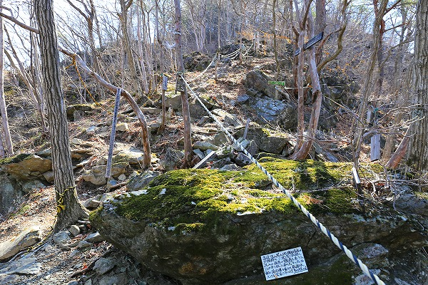
そうこうしている内に山道は段々ハードになって来る。
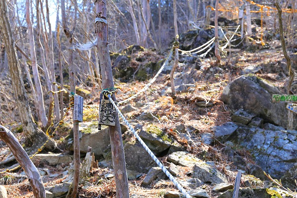
山登りに慣れていない私もハーハー言いながら登るのだが、途中途中にちょいちょいメッセージがしたためられていて登山に集中できないじゃないか！
いや、ガチで登山しに来た訳じゃないんで別にいいんですけど…。
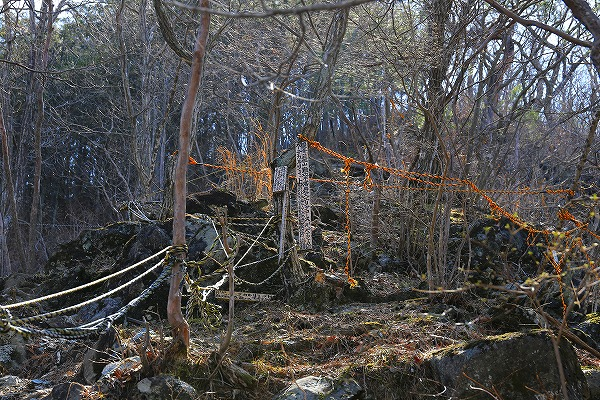
登山道は段々ハードになっていく。
恐らくこのメッセージをしたためた方が登山補助のロープもセッティングしてくれているのだろう。
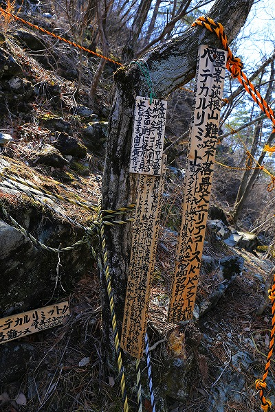
メッセージの内容は良く判らないが、少なくともこのロープだけは信じないとこの登山道は進めない。
ちなみにロープはしっかり固定されており、このロープ無しには登ることも降ることも出来ませんでした…。
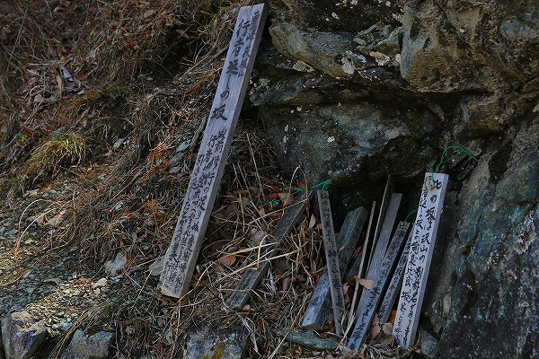
道中、様々な言葉が乱舞していたが、最終的にはありがとうございます、的な気持ちにならざるを得ないのであった。
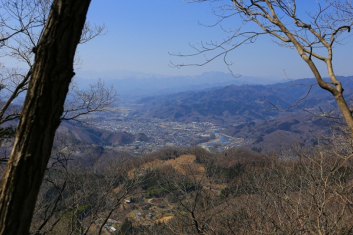
頂上から見る下界の風景はまさに絶景であった。
ありがとう、幸せ研究山花（だっけ？）！
でもさでもさ、よく考えてみたら、SNSとかで延々つぶやいている人とかってコレの比じゃないほど自分の思ったこととかを垂れ流してるよね？
ネット上だからあまり気にならないけど物理的に具現化すると結局こういう事なんだよねえ。
だからコレを見てキモーいとか言わないように。
コレはあなたやあなたの写し鏡なのですよ。
情報提供はYojiYamamotoさんです。